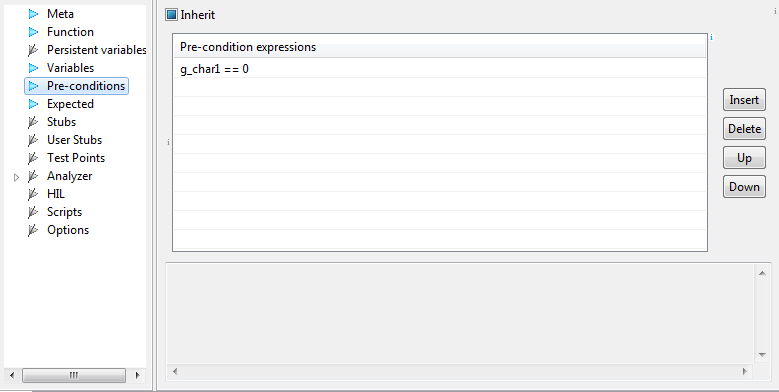

Pre-conditions
This section contains expressions, which are
evaluated before test case execution is started. This
functionality can be used, when certain global variables or
hardware input values must match some criteria for test to
succeed.
If we detect error early, it is easier to find the reason for test
failure.
